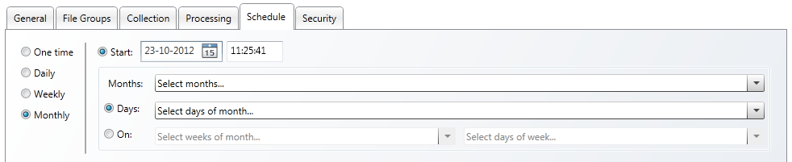

You can search for a matter via the tabs on the left side of the screen:

- Active
Active matters are all opened and being worked on. - Closed
Closed matters are inactive. Nobody is working on them. - Checked-out
Checked-out matters can be open (active) or closed (inactive), but only the person who has checked a matter out, can open it. - Checked-out by Me
'Checked-out by me' matters are matters from the logged-in user. They can be open (active) or closed (inactive). Only the logged-in user can open and work on them.

Choose from four options:
- One time
Define the start date and time. To immediately run the schedule, select Now. - Daily
Define the start date and time. Define in days how often the schedule must be run. - Weekly
Define the start date and time. Define in weeks how often the schedule must be run. Select a day of the week on which the schedule must run. - Monthly
Define the start date and time. Select one or more months in which the schedule must run. Select one or more days of the month or select weeks and days of the month on which the schedule must run.